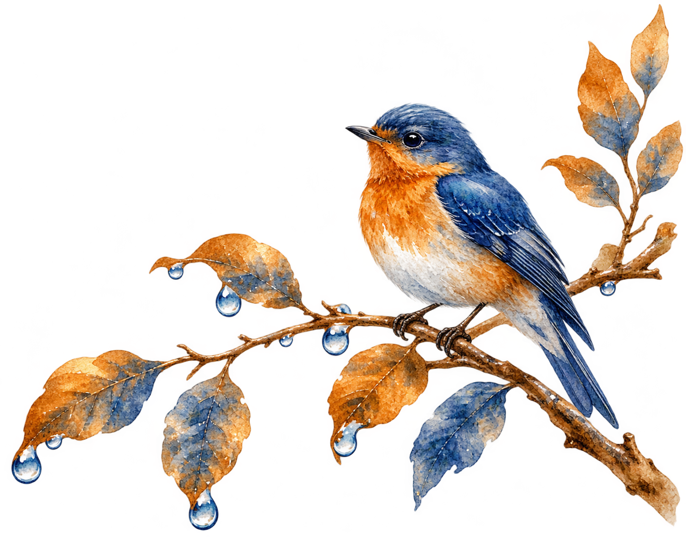
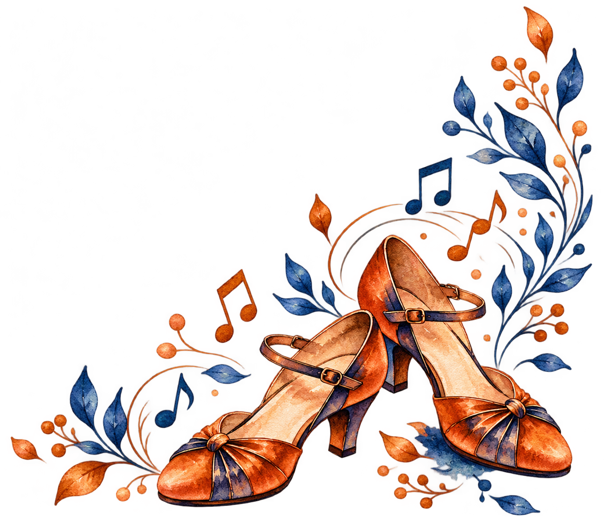
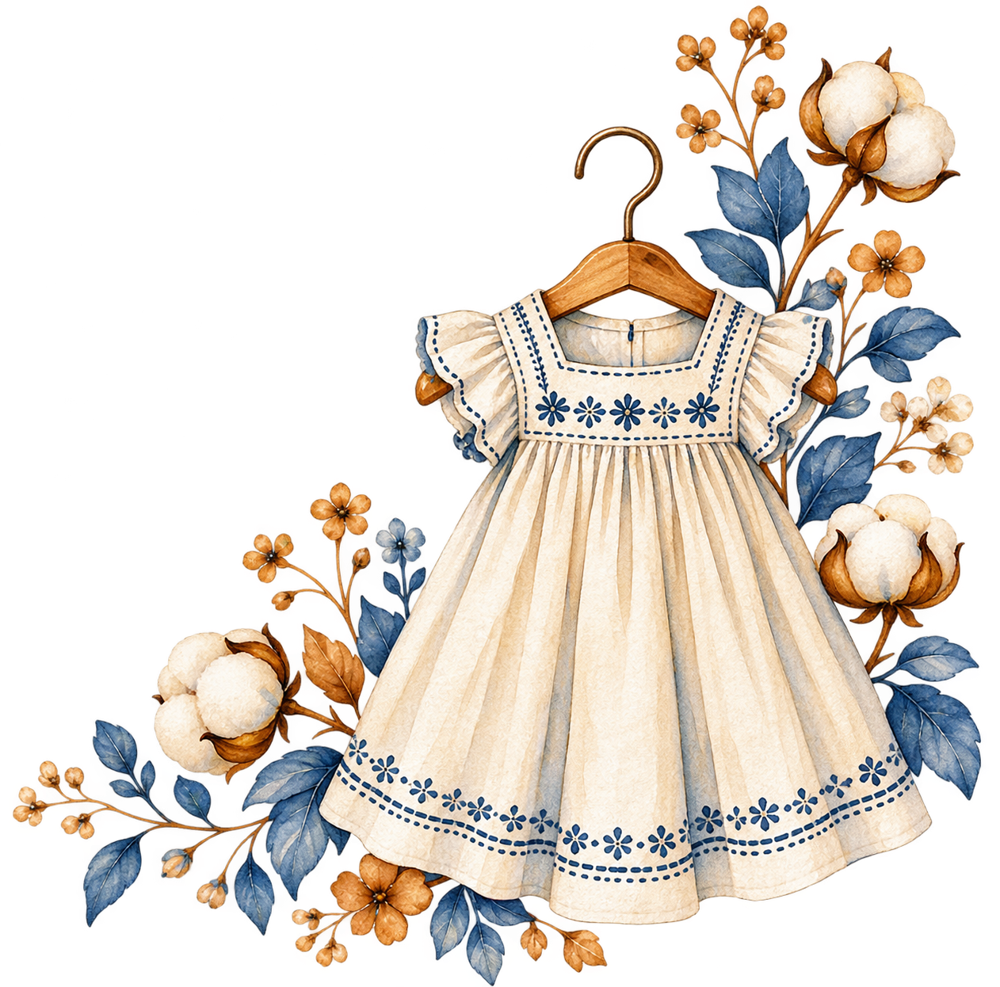

El legado de amor de
Marielitos
Pensamientos y lecciones de vida de su diario.
Para nuestra familia y seres queridos
Mi madre dejó escritas en su diario las huellas de su corazón. Ella nos enseñó que la felicidad no está en tener mucho, sino en agradecerlo todo: desde el canto de un pájaro y el agua fresca de la mañana, hasta una tortilla hecha con cariño.
Nos demostró que el estudio nos hace libres, que a los problemas de la vida se les hace frente con disciplina y bailando en la sala de la casa, y que todas las personas del mundo tienen exactamente el mismo valor.
Para ella, cada persona que formó parte de su vida fue un milagro y su mayor alegría. Cada vez que nos esforcemos, ayudemos a quien lo necesite y sonriamos ante un nuevo día, el espíritu alegre de Marielitos seguirá vivo en todos nosotros.

Pensamiento I
Agradece cada nuevo día
«Abre los ojos dando gracias por estar viva; siente la alegría de existir en el aire que respiras, en el canto de los pájaros, en la lluvia que cae sobre el jardín y hasta en el abrazo del agua fría al bañarte por la mañana».

Pensamiento II
Recuerda que todos valemos igual
«Nunca te sientas más que nadie: recuerda siempre que estamos hechos del mismo polvo y que la vida de cualquier persona tiene el mismo valor que la tuya».

Pensamiento III
Comparte tu pan con quien tiene hambre
«Nunca niegues un plato de comida o un vaso de fresco a quien lo pida. Entrégalo con ternura, pues no existe una paz más hermosa al final del día que acostarse con la satisfacción de haber calmado el hambre de alguien más».

Pensamiento IV
No te encierres en cuatro paredes
«No te encierres en paredes: mira a tu alrededor, saluda a tus vecinos, preocúpate por tus compañeros y tiende la mano a quien vive en soledad».

Pensamiento V
Trata con cariño a los abuelitos
«Regala siempre una sonrisa, un dulce y una caricia a los ancianos; en el brillo de su mirada agradecida encontrarás las bendiciones más lindas para tu corazón».

Pensamiento VI
Pon el estudio en primer lugar
«Para ti lo primero debe ser siempre el estudio; aunque cueste y toque aprender con libros prestados, esfuérzate por prepararte y no cambies tu futuro por un rato de paseo».

Pensamiento VII
Acepta las pruebas con valor y sin quejarte
«Cuando la vida te ponga una prueba difícil, acéptala con valor y nada de protestar. Cuídate mucho, no pases pensando en tus males y, si no puedes salir a caminar, pon música o baila en la sala de tu casa».

Pensamiento VIII
Sé feliz con las cosas sencillas
«No necesitas lujos para ser feliz: aprende a encontrar la belleza en las cosas sencillas de la vida, en un vestidito humilde hecho en casa y en el sabor de una tortilla palmeada por unas manos cariñosas».

Pensamiento IX
Disfruta y cuida mucho a tu familia
«Comparte siempre con tu familia en las alegrías y en los fracasos; aunque al final del día termines cansada, cocina con gusto, celebra cada cumpleaños y ayuda con paciencia, porque tenerlos cerca es el milagro más grande».
«Haz de tu vida algo tan hermoso que algún día puedas decir: 'me siento realizada al recordar mi vida'. Y siempre dale las gracias al Padre Celestial por cada momento de dicha».
Marielitos
María de los Ángeles Guzmán Núñez